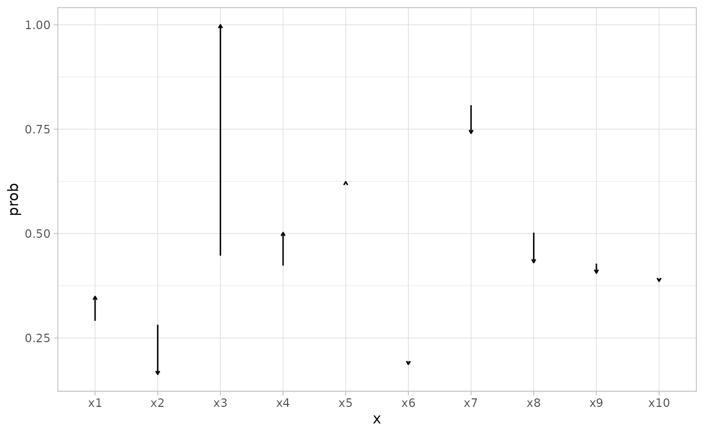
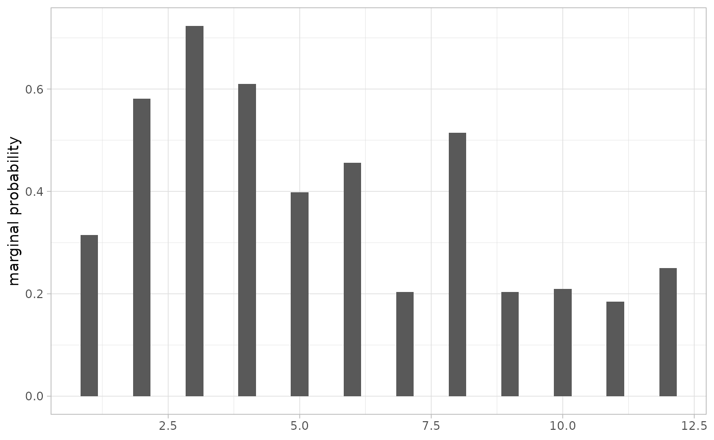
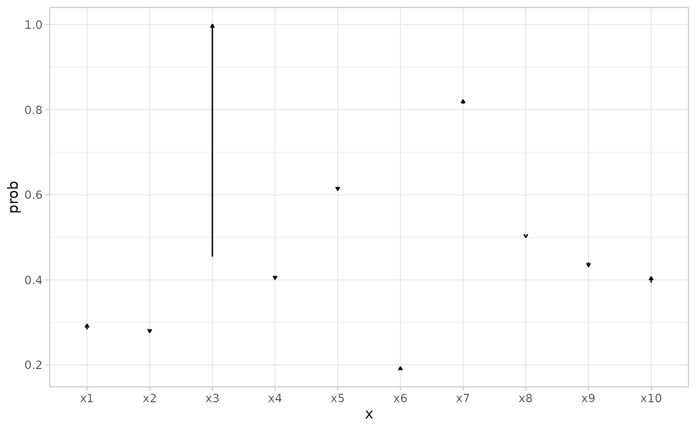
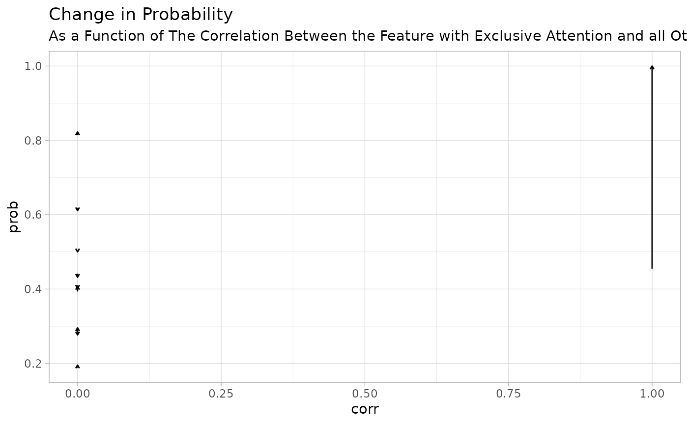
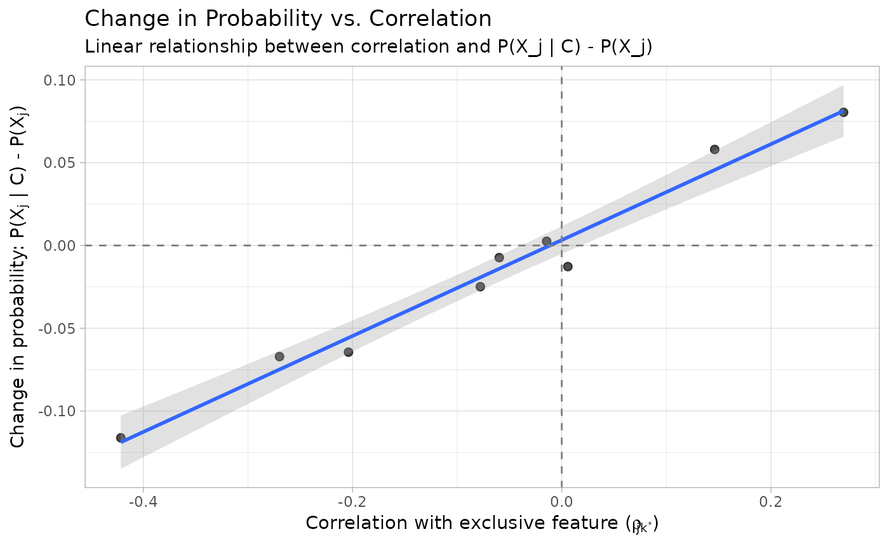

library(tidyverse)
library(protoClassification)
theme_set(
theme_light(base_family = "Avenir Next Condensed") +
theme(strip.background = element_rect(fill = "#4C4C4C"))
)
set.seed(9)
# Basic Workflow ----
K <- 10
obs <- 5e3 ## high for precision
# Data ----
mu <- rbeta(K, 2, 2)
rho <- rlkjcorr(1, K, eta = 1)
sim_data <- make_binary_data(mu, rho, obs)
params <- attr(sim_data, "params")
# Prototype Parameters ----
w <- runif(K)
w <- w / sum(w)
g <- c(10, 10)
prototypes <- list(
P1 = rep(1, K),
P2 = rep(0, K)
)
# Compute ----
comparison <- compute(sim_data, prototypes, w, g)
w2 <- temperature(w, 0)
w2
#> [1] 0 0 1 0 0 0 0 0 0 0
baseline <- compute(sim_data, prototypes, w2, g)When all attention is placed on a single feature we get to see something very intuitive about the compositions of all the other features.
probs_baseline <- summary(baseline, s = 4e3) # high s for precision
xGivenC1 <- probs_baseline$conditional$features["C1", ]
x <- probs_baseline$marginal$features
d <- full_join(
enframe(x, name = "x", value = "prob"),
enframe(xGivenC1, "x", "probGivenC1")
) |>
full_join(enframe(params$rho[which.max(w2), ], name = "x", value = "corr")) |>
mutate(x = factor(x, levels = paste0("x", 1:K)))
#> Joining with `by = join_by(x)`
#> Joining with `by = join_by(x)`
d |>
ggplot(aes(x, y = prob)) +
geom_segment(aes(yend = probGivenC1), arrow = arrow(length = unit(0.1, "cm")))
d |>
ggplot(aes(corr, prob)) +
geom_segment(
aes(yend = probGivenC1),
arrow = arrow(length = unit(0.1, "cm"))
) +
geom_vline(xintercept = 0, linetype = "dashed") +
labs(
title = "Change in Probability",
subtitle = "As a Function of The Correlation Between the Feature with Exclusive Attention and all Others."
)
In short, the difference between and is roughly a linear function of the correlation between the exclusive feature and all other features.
Thus, in an uncorrelated world, we would not expect to see much change, right?
Uncorrelated World
## identity matrix
sim_data2 <- make_binary_data(mu, diag(K), obs)
params2 <- attr(sim_data2, "params")
uncorrelated <- compute(sim_data2, prototypes, w2, g)
probs_uncorrelated <- summary(uncorrelated, s = 4e3)
xGivenC1 <- probs_uncorrelated$conditional$features["C1", ]
x <- probs_uncorrelated$marginal$features
d <- full_join(
enframe(x, name = "x", value = "prob"),
enframe(xGivenC1, "x", "probGivenC1")
) |>
full_join(enframe(
params2$rho[which.max(w2), ],
name = "x",
value = "corr"
)) |>
mutate(x = factor(x, levels = paste0("x", 1:K)))
#> Joining with `by = join_by(x)`
#> Joining with `by = join_by(x)`
d |>
ggplot(aes(x, y = prob)) +
geom_segment(aes(yend = probGivenC1), arrow = arrow(length = unit(0.1, "cm")))
d |>
ggplot(aes(corr, prob)) +
geom_segment(
aes(yend = probGivenC1),
arrow = arrow(length = unit(0.1, "cm"))
) +
labs(
title = "Change in Probability",
subtitle = "As a Function of The Correlation Between the Feature with Exclusive Attention and all Others."
)
Right!
In Search for a Simple Function
So, how do we think about the function linking
to the parameter values in the simple case in which all attention is
given to a single feature
(baseline)?
The first thing to notice is that the distance function is very simple.
It goes from this:
to this:
where denotes the feature with the single attention and the parameters are superfluous because the data is binary, and so there are only two possible distances: 0 and 1.
And so this equation:
becomes this
And so the probability that , when simply becomes this:
and it is almost close to zero when .
If we further assume that is very high, as is expected when we have more or less exclusionary categories, we have that this probability is approximately either 0 or 1.
But there’s more. By the law of total probability we get the following:
But this is not what we want, we want .
Thus, we can expand our thing once more using the law of total probability.
Given what we know about all of this, we have that and are conditionally independent.
This means that .
So we can rewrite our conditional probability (using the law of total probability) as:
Since we established that with high values: - and - and
This simplifies to:
Let’s verify this.
exclusive_feature <- colnames(sim_data)[which.max(w2)]
exclusive_feature
#> [1] "x3"
sim_data |>
summarize(across(everything(), mean), .by = all_of(exclusive_feature))
#> x3 x1 x2 x4 x5 x6 x7 x8
#> 1 1 0.3494407 0.1628635 0.5024609 0.6241611 0.1865772 0.7400447 0.4304251
#> 2 0 0.2437613 0.3779385 0.3591320 0.6213382 0.1992767 0.8618445 0.5602170
#> x9 x10
#> 1 0.4053691 0.3856823
#> 2 0.4462929 0.3960217
probs_baseline$conditional$features
#> x1 x2 x3 x4 x5 x6 x7
#> C1 0.3494339 0.1628745 9.999452e-01 0.5024521 0.6241583 0.1865780 0.7400526
#> C2 0.2437665 0.3779304 4.085407e-05 0.3591386 0.6213404 0.1992761 0.8618386
#> x8 x9 x10
#> C1 0.4304344 0.4053728 0.3856804
#> C2 0.5602099 0.4462901 0.3960233Correct!
The Connection to Correlations
The relationship between and correlations becomes clear when we consider the bivariate normal copula underlying our binary data generation process.
For binary variables generated from a bivariate normal with correlation , we have:
IMPROVE, WITH JOINT PROBABILITY AND BIVARIATE CDF
where and are the marginal probabilities, and is the bivariate standard normal CDF.
bivariateCondProb(params, kstar = 3) |> round(3)
#> x1 x2 x3 x4 x5 x6 x7 x8 x9 x10
#> 0.335 0.156 1.000 0.514 0.617 0.180 0.742 0.424 0.404 0.400
probs_baseline$conditional$features |> round(3)
#> x1 x2 x3 x4 x5 x6 x7 x8 x9 x10
#> C1 0.349 0.163 1 0.502 0.624 0.187 0.740 0.43 0.405 0.386
#> C2 0.244 0.378 0 0.359 0.621 0.199 0.862 0.56 0.446 0.396Visualization of the Relationship
# Create comprehensive comparison
comparison_data <- tibble(
feature = names(sim_data),
marginal = params$marginals,
correlation = params$rho[exclusive_feature, ],
prototype_cond = probs_baseline$conditional$features["C1", ],
theoretical_cond = bivariateCondProb(params, kstar = 3),
change = prototype_cond - marginal
) |>
filter(feature != exclusive_feature) # Remove the exclusive feature
# Plot the relationship
comparison_data |>
ggplot(aes(x = correlation, y = change)) +
geom_point(size = 2, alpha = 0.7) +
geom_smooth(method = "lm", se = TRUE, alpha = 0.3) +
geom_hline(yintercept = 0, linetype = "dashed", color = "gray50") +
geom_vline(xintercept = 0, linetype = "dashed", color = "gray50") +
labs(
title = "Change in Probability vs. Correlation",
subtitle = "Linear relationship between correlation and P(X_j | C) - P(X_j)",
x = expression(paste(
"Correlation with exclusive feature (",
rho[jk^"*"],
")"
)),
y = expression(paste(
"Change in probability: P(",
X[j],
" | C) - P(",
X[j],
")"
))
)
#> `geom_smooth()` using formula = 'y ~ x'
# Show correlation coefficient
cor_coef <- cor(comparison_data$correlation, comparison_data$change)
cat("Correlation between ρ and probability change:", round(cor_coef, 3), "\n")
#> Correlation between ρ and probability change: 0.988Summary
This analysis demonstrates that when all attention is focused on a single feature in prototype-based classification:
Conditional Independence: Other features become conditionally independent of the category given the exclusive feature:
-
Simplified Conditional Probabilities:
Linear Relationship with Correlations: The change in probability is approximately linear in the correlation between feature and the exclusive feature .
Theoretical Foundation: This relationship stems from the bivariate normal copula underlying the binary data generation process, making the prototype model’s behavior predictable and interpretable.
This provides both theoretical insight and practical understanding of how prototype-based classification behaves under extreme attention weighting scenarios.